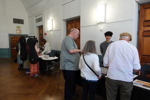
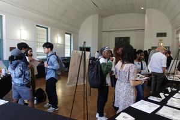
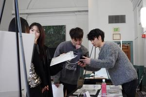
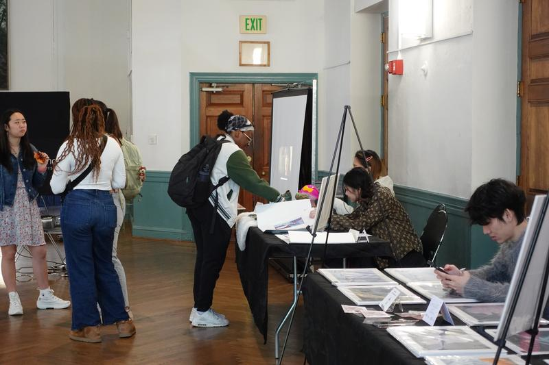
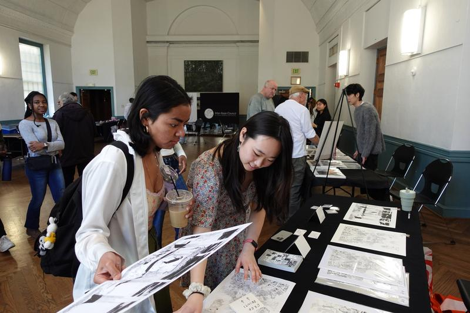

为了汇聚艺术家反思他们在"虚拟世界"主题下的体验，本次活动通过舞蹈与音乐表演、原创艺术作品展示与互动活动，呈现多元文化洞见。通过 IACE，我们致力于创造围绕不同亚洲视角的对话，促进与更广泛文化与社会共同体的联结。
对你而言，你文化中的"幻想"是什么？
你和朋友、家人一起听过的民间故事是什么？例如包括电影、视觉图像与虚拟游戏体验在内的叙事。这些根源可以追溯到遥远的过去——《西游记》中孙悟空与唐僧一行人的情谊、伊斯兰黄金时代以阿拉伯语汇编的《一千零一夜》中的中东民间故事……这些奇幻元素不断被重新创造为新的创意表达，超越传统亚洲神话，与现代虚拟视角融合，为将亚洲特有的故事与全球连接创造情感入口。
你的虚拟幻想世界是什么？
IACE（Inter-Asian Cultural Expo）2024 邀请艺术家以"奇幻世界"为主题反思他们的经验，运用绘画、雕塑、摄影、视频等多种艺术形式，共同描绘你心中的想象世界。活动将通过舞蹈与音乐表演呈现文化洞见，展示艺术家的原创作品，并设置互动环节。






活动日程
12:00 – 5:30 · 艺术博览会 Art Expo
14:00 – 15:30 · 表演 Performance
16:00 – 17:30 · 管弦乐团 Orchestra